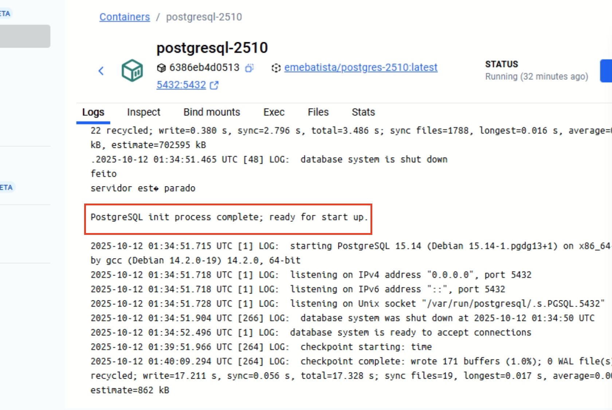
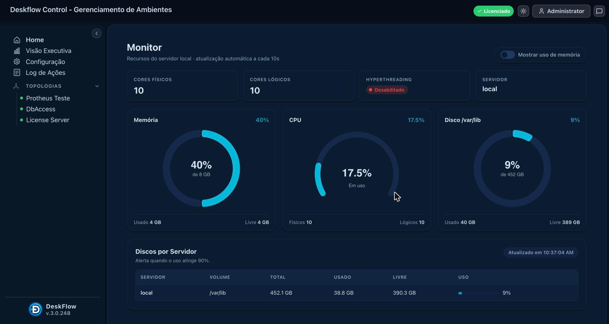
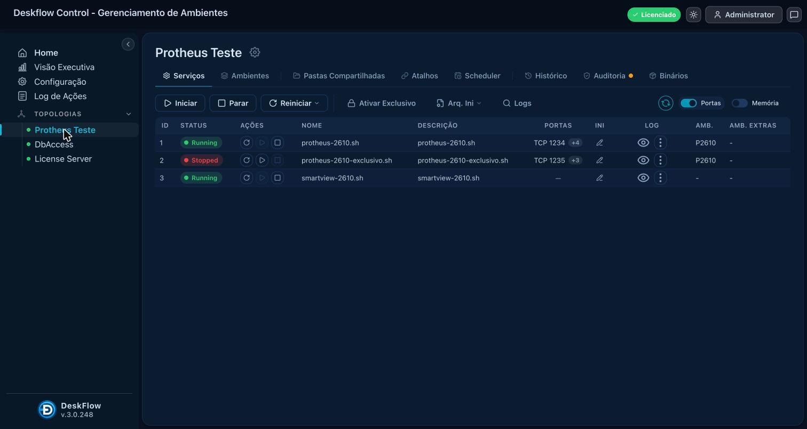
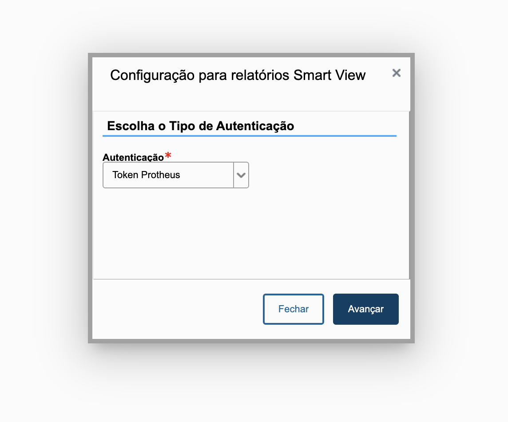
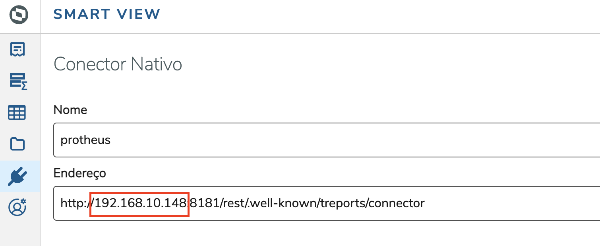
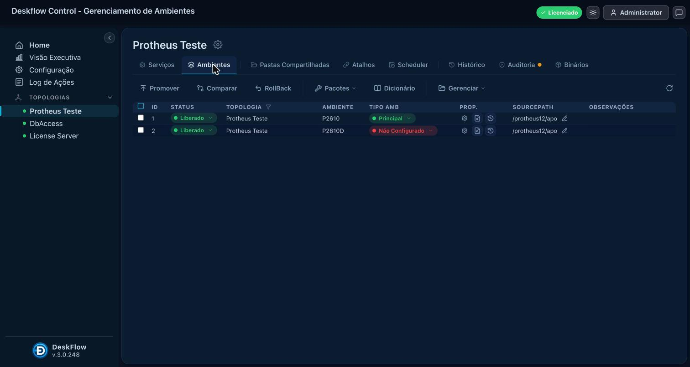
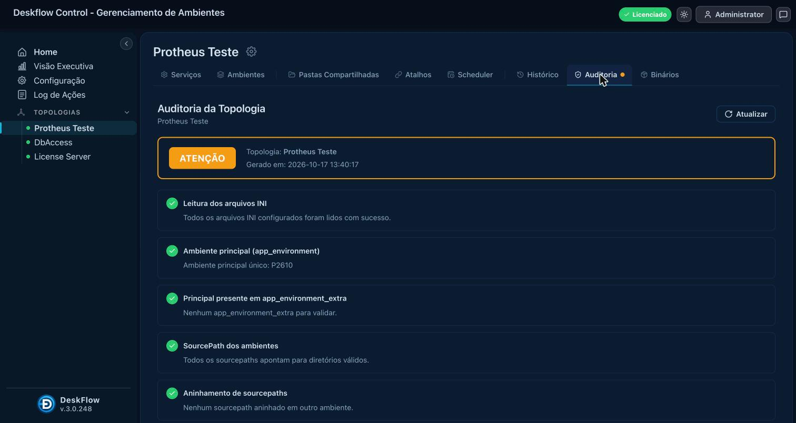
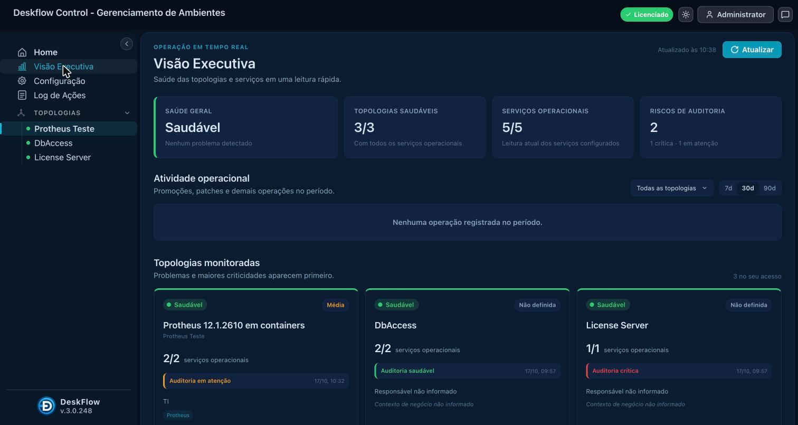
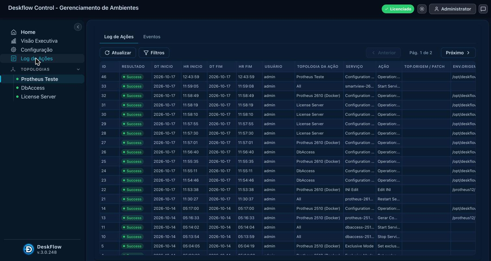

Guia do usuário: download, primeira subida, acesso ao Protheus e operação pelo DeskFlow · imagens emebatista/*-2610 no Docker Hub · repositório github.com/emebatista/docker-protheus-2610
O que você vai ter ao final: um Protheus 12.1.2610 completo (AppServer 26.3, DBAccess 26.1, License Server 3.7.2, Postgres 15 com base de demonstração, SmartView 3.11) rodando em containers na sua máquina, com o DeskFlow Control como painel de operação em http://localhost:8073. Nada é instalado fora do Docker; para remover, basta apagar os containers e volumes.
| Item | Requisito |
|---|---|
| Docker | Docker Desktop (Windows, macOS) ou Docker Engine + plugin Compose v2 (Linux). Comando docker compose version deve responder. Download: https://www.docker.com/products/docker-desktop/ |
| Recursos | Reserve ao Docker pelo menos 4 CPUs, 8 GB de RAM e 30 GB de disco (Docker Desktop → Settings → Resources). As imagens somam ~10 GB; a base restaurada ocupa ~2 GB. |
| Mac com Apple Silicon (M1/M2/M3/M4) | As imagens são linux/amd64 e rodam por emulação. Em Docker Desktop → Settings → General, desligue "Use Rosetta for x86_64/amd64 emulation on Apple Silicon" (com ela ligada alguns containers não sobem). A primeira subida é mais lenta que em x86. |
| Windows | Docker Desktop com backend WSL 2. Execute os comandos no PowerShell ou no terminal do WSL, dentro da pasta do projeto. |
| Portas livres | 1234, 4321, 8181, 1235, 4322, 5432, 7890, 2234, 5555, 8020, 7017, 7019, 8073. Se já tiver os containers da versão 2410/2510, pare-os antes (mesmas portas). |
| SmartClient (opcional) | Para a interface desktop, instale o SmartClient da TOTVS na sua máquina. O WebApp (navegador) dispensa instalação. |
| Conta no Docker Hub | Gratuita; necessária para o docker login e para baixar as imagens sem limite de taxa. |
Baixe o repositório inteiro — ele traz o docker-compose.yml, o conf.inf e a pasta deskflow/ (configuração do DeskFlow). Duas formas:
git clone https://github.com/emebatista/docker-protheus-2610.git cd docker-protheus-2610
ou, no GitHub, botão Code → Download ZIP, descompacte e entre na pasta. A estrutura deve ficar assim:
docker-protheus-2610/ ├── docker-compose.yml ← todos os serviços, incluindo o DeskFlow ├── conf.inf ← credenciais do Postgres usadas pelo DBAccess ├── deskflow/ │ ├── config.json ← topologia "Protheus 2610 (Docker)" já configurada │ ├── deskflow.ini ← parâmetros do DeskFlow (licença entra aqui) │ └── nginx/deskflow.conf ← proxy da interface web └── README.md
Não renomeie nem mova os arquivos: o DeskFlow lê o docker-compose.yml e o conf.inf dessa pasta para controlar os containers.
docker login
docker compose up -dO Docker baixa as sete imagens (~10 GB) e cria o grupo protheus2610 com os containers
postgresql-2610, license-server-2610, dbaccess-2610, protheus-2610, smartview-2610, deskflow-2610 e deskflow-web-2610. O container protheus-2610-exclusivo fica cadastrado, mas só sobe quando o DeskFlow ativa o modo exclusivo.protheus e restaura o seed 12.1.2610 (203 MB comprimidos → ~2 GB). Leva de 2 a 10 minutos conforme a máquina. Acompanhe no Docker Desktop (container postgresql-2610 → Logs) ou com:
docker compose logs -f dbEstá pronto quando aparecer
Restore Finished. Base Protheus 12.1.2610 pronta. seguido de PostgreSQL init process complete; ready for start up.
Enquanto o banco restaura, o AppServer reinicia sozinho algumas vezes (não encontra o DBAccess/banco). É normal; ele estabiliza assim que o Postgres responde.
Volumes criados automaticamente: protheus12 (binários, RPO, dicionários e logs do AppServer), protheus12-exclusivo, protheus12-license, dbaccess-multi e a pasta de dados do Postgres. Eles são preenchidos a partir das imagens e preservam alterações (INIs editados, patches aplicados, dados) entre reinícios e recriações dos containers.
admin, senha msadm.
No menu lateral, Topologias lista "Protheus 2610 (Docker)" (AppServer, exclusivo e SmartView), "DbAccess" (DBAccess e Postgres) e "License Server". Clique na primeira: a aba Serviços mostra cada container como um serviço, com status, portas em uso e botões iniciar / parar / reiniciar.

Use esta tela para confirmar que a subida terminou: protheus-2610.sh e smartview-2610.sh em Running; na topologia DbAccess, postgres-2610.sh e dbaccess-2610.sh em Running; o exclusivo fica Stopped por padrão.
| Interface | Como |
|---|---|
| WebApp (navegador, sem instalar nada) | http://localhost:4321. No macOS o WebApp pede o WebAgent (aplicativo da TOTVS) na primeira vez; instale e deixe-o aberto. Para ir direto a um módulo: http://localhost:4321/?StartProg=SIGACFG&Env=P2610. |
| SmartClient (desktop) | Servidor localhost, porta 1234, ambiente P2610, programa inicial SIGAMDI (ou SIGACFG para o Configurador). |
| Usuário / senha | Admin / T0tvs@2026 |
| Empresa / filial | 99 / 01 (TESTE / MATRIZ), base de demonstração. |
| WebMonitor | http://localhost:1234/webmonitor |
| Ambiente sem porta multiprotocolo | P2610D — útil para compilar customizações ADVPL/TLPP pelo VSCode (TDS). |
Na primeira entrada aparece o aviso "Este ambiente utiliza base de Desenvolvimento": é esperado, feche e siga.
O SmartView (relatórios e análises) já sobe no container smartview-2610:
http://localhost:7017 — login com o usuário do Protheus (admin e a senha acima).http://localhost:7019/diagnostic (status do serviço, versões instaladas); http://localhost:7019/startup para reconfigurar.Para o Protheus abrir os relatórios no formato SmartView, cadastre a URL no Configurador: SIGACFG → Ambiente → Cadastros → Configuração Smart View → autenticação Token Protheus → Avançar → URL base http://<IP da sua máquina>:7017 → Testar conexão → Confirmar.
Use o IP real da máquina (ex.: http://192.168.0.10:7017), nunca localhost ou 127.0.0.1: quem chama essa URL é o AppServer de dentro do container. Descubra o IP com ipconfig (Windows) ou ipconfig getifaddr en0 (macOS). Se o IP mudar (outra rede), refaça o cadastro. Dentro do SmartView, nos conectores, informe o mesmo IP.


Depois da primeira subida, você não precisa mais do docker compose: tudo passa pelo DeskFlow.
| Tarefa | Onde |
|---|---|
| Parar / iniciar / reiniciar um serviço ou todos | Topologia → Serviços → botões por linha ou Iniciar/Parar/Reiniciar no topo. |
| Modo exclusivo (manutenção na base) | Serviços → Ativar Exclusivo: para o AppServer normal e sobe o protheus-2610-exclusivo (SmartClient porta 1235 / WebApp 4322, sem REST). Desativar Exclusivo devolve tudo ao normal. |
| Ver o log do AppServer em tempo real | Serviços → ícone do olho na linha do serviço: console.log ao vivo com filtro por palavra-chave e download. |
Editar appserver.ini / dbaccess.ini | Serviços → ícone do lápis (edição com validação e backup automático) ou menu Arq. Ini → comparar seções. |
| Ambientes e RPO | Aba Ambientes: promover RPO entre ambientes, comparar, rollback, aplicar pacotes (PTM/PAK/UPD), atualizar dicionário. |
| Auditoria da topologia | Aba Auditoria: checagens de INIs, ambiente principal, sourcepaths, binários e compilador, com semáforo. |
| Saúde geral | Visão Executiva: topologias saudáveis, serviços operacionais, riscos e atividade do período. |
| Rastreabilidade | Log de Ações: quem fez o quê, quando, com resultado. |
| Agendamentos | Aba Scheduler: restart programado, promoções, patches por cron ou intervalo. |
| Atalhos | Aba Atalhos: WebApp, WebMonitor, SmartView, License Server já cadastrados. |




O item "Compilador configurado" da auditoria aparece em amarelo até você gerar o compilador da topologia (Configuração → Topologias → Gerar Compilador). Não impede nada do que está neste guia.
| Serviço | Endereço | Credencial |
|---|---|---|
| DeskFlow Control | http://localhost:8073 | admin / msadm (troque) |
| Protheus WebApp | http://localhost:4321 | Admin / T0tvs@2026 |
| Protheus SmartClient | localhost:1234, ambiente P2610 | Admin / T0tvs@2026 |
| Protheus exclusivo (só em modo exclusivo) | localhost:1235 · WebApp 4322 | idem |
| REST do Protheus | http://localhost:8181/rest | token Protheus |
| SmartView | http://localhost:7017 · agente :7019 | usuário do Protheus |
| License Server | http://localhost:8020 (console) · 5555/2234 | — |
| DBAccess (DBMonitor) | localhost:7890 | — |
| Postgres | localhost:5432, base protheus | protheus / protheus (ver conf.inf) |
Segurança: este pacote é para demonstração e desenvolvimento. As portas ficam abertas para a rede local e as senhas são públicas. Não exponha a máquina à internet; em servidor compartilhado, publique as portas só em 127.0.0.1 no docker-compose.yml e troque as senhas.
docker compose stop. Subir de novo: docker compose start (ou pelo Docker Desktop).docker compose up -d --no-deps --force-recreate --pull always protheus(idem
license, db, dbaccess, smartview, deskflow). Os volumes nomeados preservam INIs, RPO e dados.docker compose stop protheus docker volume rm protheus2610_protheus12 docker compose up -d protheus
volume/data/psql (ou o volume do banco) e subir; o seed é restaurado de novo.docker compose down -v (apaga containers e volumes) e, se quiser liberar disco, docker image rm das imagens emebatista/*-2610.deskflow/ do projeto; recriar o container não os perde. Atualizações do DeskFlow vêm pela imagem (--pull always deskflow).| Sintoma | Causa provável / solução |
|---|---|
| Container não sobe no Mac Apple Silicon | Rosetta ligada no Docker Desktop. Desligue (Settings → General) e reinicie o Docker. |
port is already allocated | Outra versão (2410/2510) ou outro programa usando a porta. Pare os containers antigos ou mude a porta publicada no compose. |
Protheus não abre logo após o up | Banco ainda restaurando. Espere o Restore Finished no log do Postgres; o AppServer reinicia sozinho. |
| WebApp fica em branco | Sessões abandonadas (abas fechadas sem Log Off). No DeskFlow, reinicie o protheus-2610.sh. No macOS confirme que o WebAgent está aberto. |
| "Falha ao conectar com o WebAgent" (macOS) | Instale/abra o WebAgent da TOTVS (porta 21021) e recarregue o WebApp. |
| SmartView: "Teste da conexão" falha no Configurador | URL com localhost. Use o IP real da máquina; confira http://localhost:7019/diagnostic (servidor deve estar ativo na versão 3.11.x). |
| REST (8181) não responde após parada brusca | Reinicie o protheus-2610.sh pelo DeskFlow; o REST volta em ~1 minuto. |
| DeskFlow mostra serviço Stopped que está rodando | O DeskFlow lê o status pelo Docker; aguarde o ciclo de 30 s ou clique em atualizar. Se persistir, verifique se o grupo do compose se chama protheus2610 (nome fixo no arquivo). |
| DeskFlow "Licença expirada" | Veja a seção 12. |
| Pouca memória / lentidão | Aumente os recursos do Docker Desktop (8 GB+). Pare o SmartView se não for usá-lo (pelo DeskFlow). |
O DeskFlow Control é licenciado por servidor. Este pacote demonstra o produto completo; para usar no seu ambiente (VM ou servidor físico, Linux ou Windows, com seus AppServers reais), solicite uma licença de avaliação ou comercial em https://deskflow.com.br (Contato) ou pelo e-mail emebatista@hotmail.com, informando empresa e quantidade de servidores. Você receberá tenant_code, tenant_name e tenant_authorization; grave-os no deskflow/deskflow.ini (seção [setup]), reinicie o container deskflow-2610 e confira o selo Licenciado no topo da tela. A renovação é automática (job diário) enquanto o servidor de licenças estiver acessível.
Instalação em servidor próprio (fora do Docker): pacotes RPM (EL8/EL9) e instalador Windows, com nginx e serviço do sistema. Documentação em https://deskflow.com.br.
Versão deste guia: 17/10/2026. Protheus 12.1.2610 · AppServer 26.3.0.0 · DBAccess 26.1.0.0 · License Server 3.7.2 · SmartView 3.11.4 · DeskFlow Control 3.0.250.